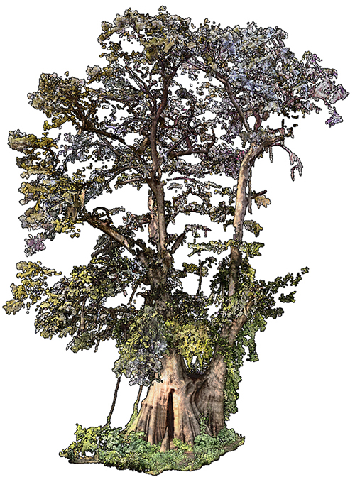
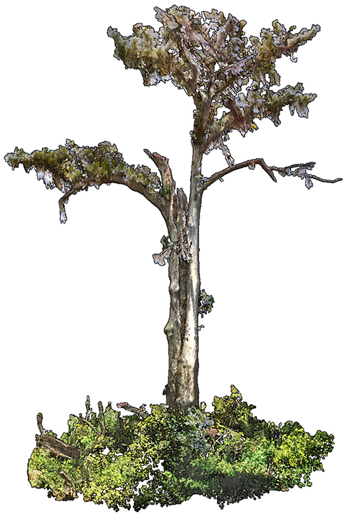

Hye Yeon Nam
Rooted
Work in Progress
Point Cloud trees in viewer
Laurus nobilis I
Magnolia soulangeana I
Magnolia soulangeana II
Morella californica I
Polystichum acrostichoides I
Quercus alba I

Point clouds are an emerging medium in art and design. Artists like Quayola and Marshmallow Laser Feast are exploring aesthetic possibilities of the medium as a different way of seeing that balances indexical truth claims and hyperreal detail with pointillistic abstraction. Artists are exploring how point clouds can be used to represent the form and phenomenological character of existing scenes in unprecedented detail. They are also exploring how point clouds can be segmented, disassembled, transformed, and reassembled to model new designs. Heritage Trees will contribute to the art and design community by exploring the aesthetic and sculptural potential of point clouds. It will contribute to the scholarly community with a method for the digital preservation of heritage trees and a process for 3D printing laser scanned plants. As a work of art this project aims to evoke a sense of grandeur and loss, of presence and absence; it expresses the vibrant materiality, ecological memory, and cultural heritage of these ancient trees, raising awareness of their legacy and imminent loss. These point cloud trees will be simulated using TouchDesigner software in themes of entanglement, technology, ecology, impermanence, and time. This will be presented at the Shaw Center for the Arts in April, 2024.